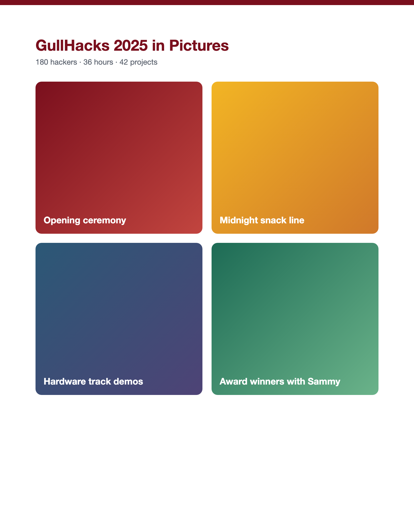
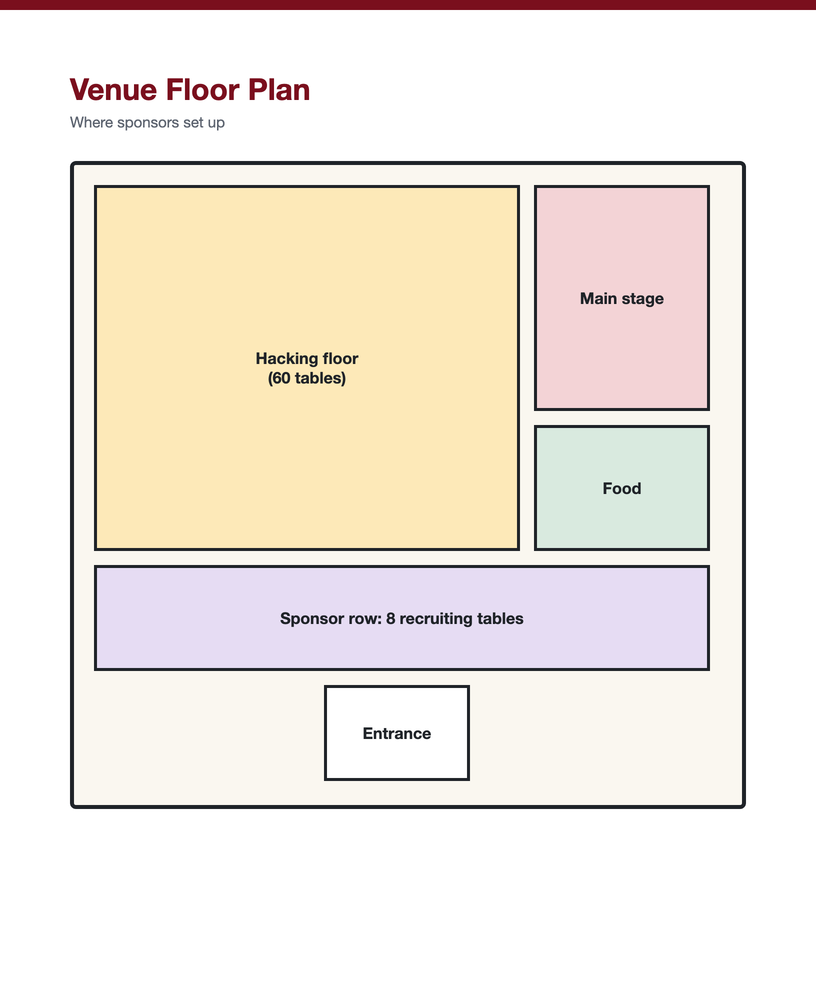
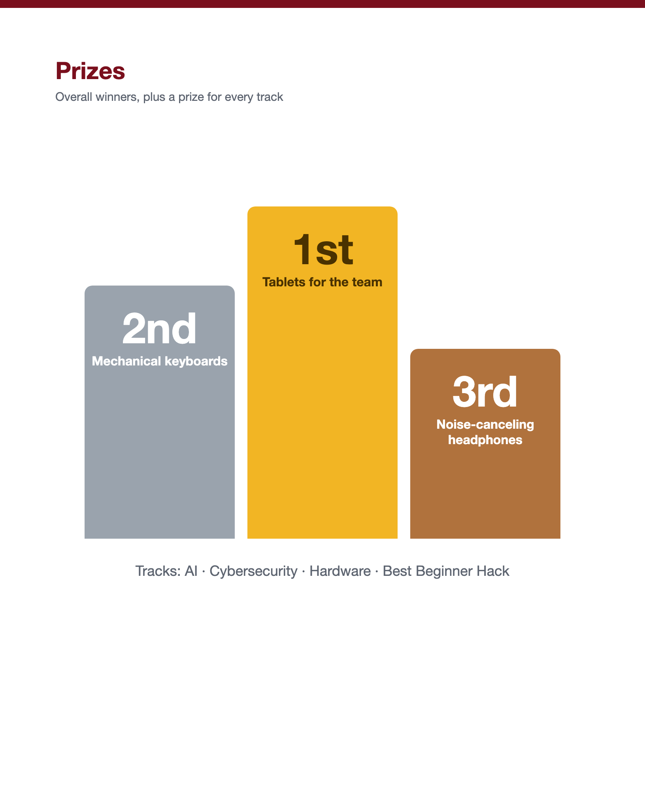
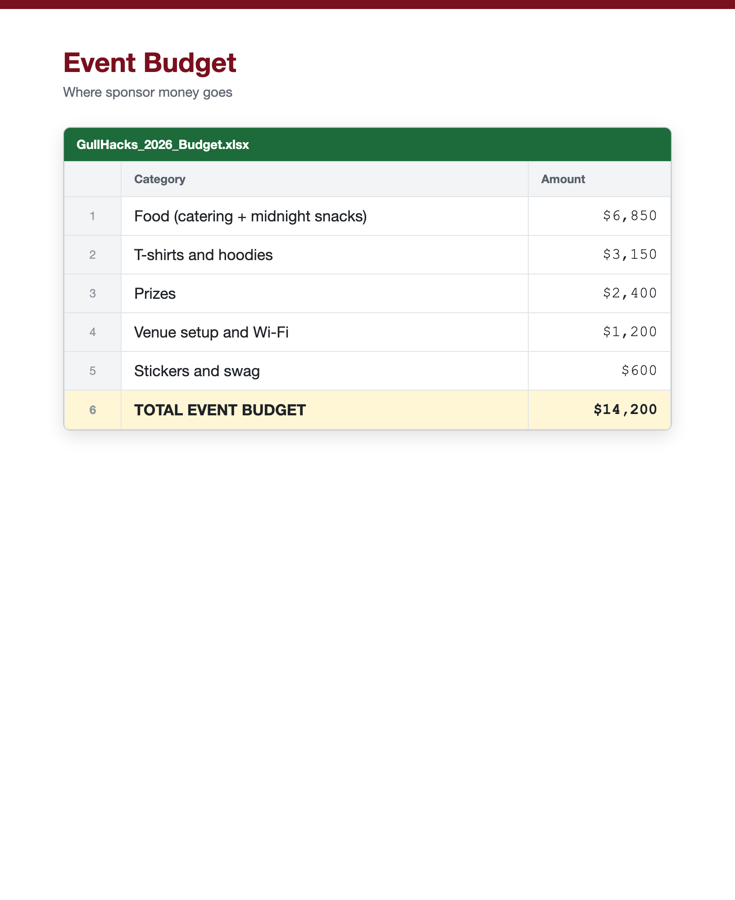

Salisbury University's student hackathon · November 14–16
Prepared for Chesapeake Software



GullHacks is a 36-hour hackathon run by Salisbury University students. Hackers build software and hardware projects in four tracks: AI, cybersecurity, hardware, and best beginner hack.
About 250 students from Salisbury University and other schools on the Delmarva Peninsula. Roughly 40% are first-time hackers.
Sponsors meet students early, see what they can build in a weekend, and get their name in front of the next class of engineers.

Logo on the t-shirt, a judging seat, a recruiting table, and a 5-minute talk at the opening ceremony.
Logo on the website and a recruiting table on Saturday.
Logo on the website and a mention at the closing ceremony.
Questions about sponsoring? Reply to the email this packet came with, and the GullHacks sponsorship team will get back to you within two days.
Go Gulls!